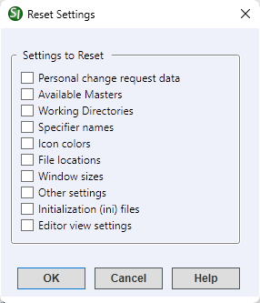

The Reset Settings command provides options to return the application's settings to the original default settings. This can be useful for troubleshooting issues.
 Content descriptions are detailed below the image.
Content descriptions are detailed below the image.

Settings to Reset
- Personal change request data: Removes the user-specific information preserved in the top portion of the Software Change Request Form generated through the Tools menu, Software Change Request > Create/Edit Form option.
- Available Masters: Resets the available Masters by returning to the Connected Masters Required window that appears during the initial installation. When executed, you will be given the following options:
- Have SpecsIntact download and restore the latest UFGS Master
- Restore a SpecsIntact Master that is already on this computer in SpecsIntact backup format (e.g., UFGS_M.zip)
- Connect a SpecsIntact Master that is already accessible to this computer on a local or mapped network drive
- Working Directories: Resets the Working Directories to the default value. When executed, you will be given the following options:
- Have SpecsIntact create a default Working Directory -- (C:\Users\UserID\Documents\SpecsIntactWD)
- Connect Working Directories Manually -- Automatically opens Setup > Working Directories
- Exit SpecsIntact
 Resetting the Available Masters or Working Directories removes the application's connection to the Masters and Working Directories, without deleting files. Remember to record your current Working Directories, as they'll require reconnection along with the Masters post-reset.
Resetting the Available Masters or Working Directories removes the application's connection to the Masters and Working Directories, without deleting files. Remember to record your current Working Directories, as they'll require reconnection along with the Masters post-reset.
- Specifier names: Removes the names entered through the Setup menu, Options > Specifiers tab.
- Icon colors: Returns the icon colors to the system default settings.
- File locations: Returns the file locations to the system default settings.
- Window sizes: Restores all resized windows and positions to their default settings. This can correct issues with windows appearing on phantom monitors, often caused by display configuration changes.
- Other settings: Resets non-categorized user-specific settings back to the default settings (e.g., Add Sections, Columns, Mail, Backup, etc.).
- Initialization (.ini) files: Restores the application settings to the default settings. These settings do not fit in the categories listed above, such as the Add Sections, Columns, Mail, Backup, etc.
- Editor view settings: Restores the SI Editor's Title Bar and Toolbar colors, Tagsbar buttons, toolbar icon sizes, and menu animations to their default state.
 To learn more about the options when resetting Available Masters and Working Directories, refer to the Working Directories & Connecting Masters Chapter in the Installation Guide located on the SpecsIntact Website's Support & Help Center page.
To learn more about the options when resetting Available Masters and Working Directories, refer to the Working Directories & Connecting Masters Chapter in the Installation Guide located on the SpecsIntact Website's Support & Help Center page.
Standard Windows Commands
 The OK button will execute and save the selections made.
The OK button will execute and save the selections made.
 The Cancel button will close the window without recording any selections or changes entered.
The Cancel button will close the window without recording any selections or changes entered.
 The Help button will open the Help Topic for this window.
The Help button will open the Help Topic for this window.
How to Use This Feature
To Reset User-Specific Settings Back To Their Default Setting:
- In the SpecsIntact Explorer, select the Setup menu and select Reset Settings
- Below Settings to Reset, check the options you wish to reset
- Click OK
- When the Reset window opens, click Yes
Additional Learning Tools
 Download the SpecsIntact Installation Guide from the SpecsIntact Website's Support & Help Center page.
Download the SpecsIntact Installation Guide from the SpecsIntact Website's Support & Help Center page.
 Watch the Local Installation and Setup eLearning module within Chapter 1 - Getting Started.
Watch the Local Installation and Setup eLearning module within Chapter 1 - Getting Started.
Users are encouraged to visit the SpecsIntact Website's Support & Help Center for access to all of our User Tools, including Web-Based Help (containing Troubleshooting, Frequently Asked Questions (FAQs), Technical Notes, and Known Problems), eLearning Modules (video tutorials), and printable Guides.